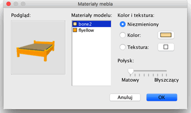

| Modyfikacja mebli | |||
| Możesz zmienić położenie, rozmiar i kąt
obrotu mebli w domu przy użyciu myszy lub opcji menu Meble >
Modyfikuj... Jeżeli wybrałeś pojedynczy element na planie
zostanie on dopasowany i zorientowany względem grubości ścian jeśli to są drzwi lub okna. Jeśli jest to inny rodzaj elementu zostanie on umieszczony przy ścianie.
Jeśli chcesz pracować na grupie elementów jako jeden (np stół z krzesłami) wybierz opcję Meble > Grupuj
|

|
| Kiedy kursor myszy znajduje się ponad jednym z rogów zmienia swoją postać tak by wskazać na możliwość przeciągnięcia rogu aby zmienić przyporządkowany mu atrybut obiektu. Kiedy trzymasz wciśnięty przycisk myszy pojawia się podpowiedź reprezentująca wartość konkretnego atrybutu. Zmiany są nanoszone równocześnie na plan i widok 3D. Każdy mebel może być również modyfikowany w odpowiednim oknie dostępnym poprzez podwójne kliknięcie obiektu lub menu Meble > Modyfikuj.
W oknie Modyfikuj przedmiot możesz zmienić jego nazwę,
kąt obrotu, współrzędne X i Y jego środka
na siatce planu, podwyższenie nad poziomem podłogi, szerokość,
głębokość, wysokość, kolor, widoczność.
Jeżeli obiekt nie może zostać dopasowany do Twojego projektu
możesz spróbować włączyć jego odbicie
lustrzane. Pamiętaj, że zmiana koloru czasem niesie ze sobą
nieprzewidziane skutki zmieniając cały obiekt na jeden kolor.
|


Okno Materiały mebli zawiera w sobie liste materiałów, które możesz edytować i podgląd 3D koloru oraz wyglądu tekstury, która została wybrana. Należy zwrócić uwagę na nazwy materiałów, które są wybierane, ponieważ nie zawsze posiadają one swoją jasną i odpowiednią nazwę (np. kość2 zamiast materac). Możesz dowolnie obracać obiektem w podglądzie 3D przy pomocy myszy jeśli to jest konieczne.
|